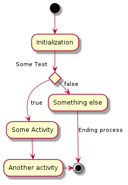
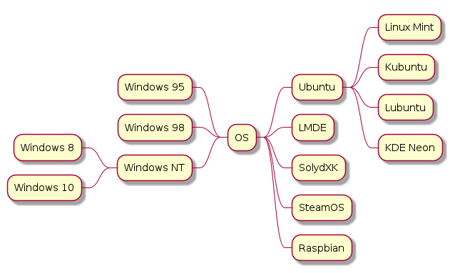

PlantUML Reference Guide
PlantUML Webpage
PlantUML Ashley Doc
PlantText Webpage
With the skinparam you can change the feel and design of the whole Diagram
skinparam shadowing false
skinparam monochrome true
skinparam monochrome reverse
participant Alice participant "The **Famous** Bob" as Bob Alice -> Bob : hello --there-- ... Some ~~long delay~~ ... Bob -> Alice : ok note left This is **bold** This is //italics// This is ""monospaced"" This is --stroked-- This is __underlined__ This is ~~waved~~ end note Alice -> Bob : A //well formatted// message note right of Alice This is <back:cadetblue><size:18>displayed</size></back> __left of__ Alice. end note note left of Bob <u:red>This</u> is <color #118888>displayed</color> **<color purple>left of</color> <s:red>Alice</strike> Bob**. end note note over Alice, Bob <w:#FF33FF>This is hosted</w> by <img img/plantuml-logo.png> end note
:Main Admin: as Admin (Use the application) as (Use) User -> (Start) User --> (Use) Admin ---> (Use) note right of Admin : This is an example. note right of (Use) A note can also be on several lines end note note "This note is connected\nto several objects." as N2 (Start) .. N2 N2 .. (Use)
Object <|-- ArrayList Object : equals() ArrayList : Object[] elementData ArrayList : size()
class Foo1 { You can use several lines .. as you want and group == things together. __ You can have as many groups as you want -- End of class } class User { .. Simple Getter .. + getName() + getAddress() .. Some setter .. + setName() __ private data __ int age -- encrypted -- String password }

(*) --> "Initialization" if "Some Test" then -->[true] "Some Activity" --> "Another activity" -right-> (*) else ->[false] "Something else" -->[Ending process] (*) endif
title Servlet Container (*) --> "ClickServlet.handleRequest()" --> "new Page" if "Page.onSecurityCheck" then ->[true] "Page.onInit()" if "isForward?" then ->[no] "Process controls" if "continue processing?" then -->[yes] ===RENDERING=== else -->[no] ===REDIRECT_CHECK=== endif else -->[yes] ===RENDERING=== endif if "is Post?" then -->[yes] "Page.onPost()" --> "Page.onRender()" as render --> ===REDIRECT_CHECK=== else -->[no] "Page.onGet()" --> render endif else -->[false] ===REDIRECT_CHECK=== endif if "Do redirect?" then ->[yes] "redirect request" --> ==BEFORE_DESTROY=== else if "Do Forward?" then -left->[yes] "Forward request" --> ==BEFORE_DESTROY=== else -right->[no] "Render page template" --> ==BEFORE_DESTROY=== endif endif --> "Page.onDestroy()" -->(*)

@startmindmap + OS ++ Ubuntu +++ Linux Mint +++ Kubuntu +++ Lubuntu +++ KDE Neon ++ LMDE ++ SolydXK ++ SteamOS ++ Raspbian -- Windows 95 -- Windows 98 -- Windows NT --- Windows 8 --- Windows 10 @endmindmap
@startwbs * Business Process Modelling WBS ** Launch the project *** Complete Stakeholder Research *** Initial Implementation Plan ** Design phase *** Model of AsIs Processes Completed **** Model of AsIs Processes Completed1 **** Model of AsIs Processes Completed2 *** Measure AsIs performance metrics *** Identify Quick Wins ** Complete innovate phase @endwbs
@startuml project starts the 2020/05/01 saturday are closed sunday are closed Project starts the 1th of may 2020 [Test prototype] lasts 10 days [Prototype completed] happens at [Test prototype]'s end [Setup assembly line] lasts 12 days [Setup assembly line] starts at [Test prototype]'s end @enduml
@startuml project starts the 2021/06/01 saturday are closed sunday are closed printscale weekly [WP1 Literature Research] starts at 2021/06/01 [WP1 Literature Research] lasts 3 weeks [WP2 External Survey] starts at [WP1 Literature Research]'s start [WP2 External Survey] ends at [WP1 Literature Research]'s end [WP3 Synthesising State of the Art] starts at [WP2 External Survey]'s end [WP3 Synthesising State of the Art] lasts 2 weeks [Theoretical research completed] happens at [WP3 Synthesising State of the Art]'s end [WP4 Selection practial application] starts at [WP3 Synthesising State of the Art]'s end [WP4 Selection practial application] lasts 2 week [WP5 Data Collection] starts at [WP4 Selection practial application]'s end [WP5 Data Collection] lasts 3 weeks [WP6 ML Model Selection] starts at [WP4 Selection practial application]'s end [WP6 ML Model Selection] lasts 2 weeks [WP7 ML Model Implementation] starts at [WP6 ML Model Selection]'s end [WP7 ML Model Implementation] lasts 5 weeks [Implementation completed] happens at [WP7 ML Model Implementation]'s end [WP8 Fieldtest] starts at [WP7 ML Model Implementation]'s end [WP8 Fieldtest] ends at 2021/09/30 [Write Thesis Report] starts at 2021/06/01 [Write Thesis Report] ends at 2021/09/30 ' Color definitions [WP1 Literature Research] is colored in LightSteelBlue/DimGrey [WP2 External Survey] is colored in LightSteelBlue/DimGrey [WP3 Synthesising State of the Art] is colored in LightSteelBlue/DimGrey [WP4 Selection practial application] is colored in LightGreen/DimGrey [WP5 Data Collection] is colored in LightGreen/DimGrey [WP6 ML Model Selection] is colored in LightGreen/DimGrey [WP7 ML Model Implementation] is colored in LightGreen/DimGrey [WP8 Fieldtest] is colored in SandyBrown/Sienna [Write Thesis Report] is colored in LightSteelBlue/DimGrey @enduml
@startuml clock clk with period 1 binary "Enable" as EN @0 EN is low @5 EN is high @10 EN is low @enduml